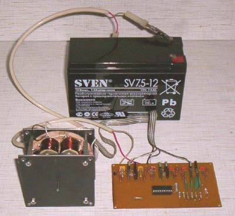
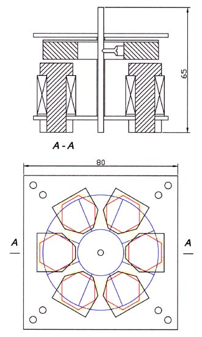
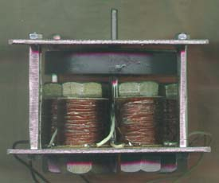
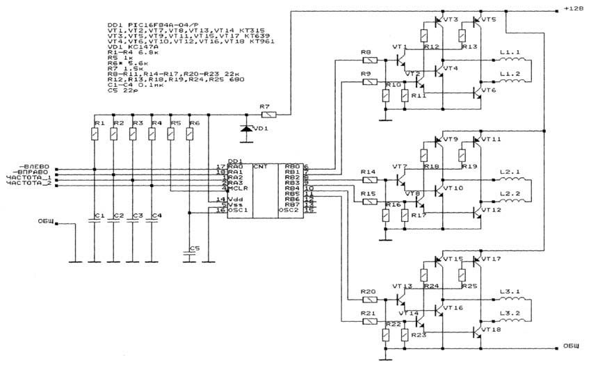
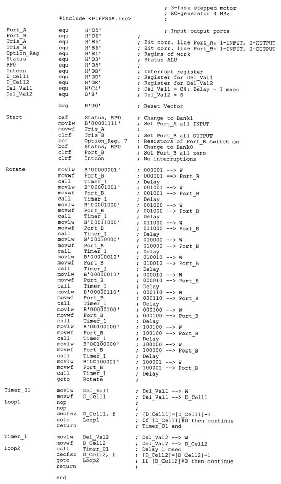

Шаговый двигатель на
кольцевом постоянном магните
(8 полюсов, 6 фаз, угол шага 15 градусов) с системой управления

Характеристики:
Конструкция двигателя
Сборочный чертеж шагового двигателя (ШД) показан на рис. 1, а внешний вид - на рис. 2.

Рис. 1. Сборочный чертеж ШД.

Рис. 2. Шаговый двигатель (вид сбоку).
Статор двигателя состоит из основания и крышки, стянутых шпильками. По центру основания и крышки просверлены отверстия, в которые вставляется вал ротора. Постоянный кольцевой магнит крепится на валу с помощью втулки. На основании расположены шесть катушек со стальными сердечниками. Двигатель может работать в шести- или трехфазном режиме (при последовательном соединении противоположных катушек). Постоянный магнит намагничен в 8-полюсном намагничивающем устройстве [5]. Расчет катушек выполнен с помощью программы Coil [1].
Система управления
Для опробования ШД и измерения его характеристик была использована система управления (СУ) на PIC-контроллере [6]. Электрическая принципиальная схема СУ показана на рис. 3, а внешний вид печатной платы - на рис. 4. На рис. 5 приведен пример простой программы для опробования двигателя в режиме полушага (7.5 градусов).

Рис. 3. Схема электрическая принципиальная СУ ШД на PIC-контроллере.
СУ собрана на PIC-контроллере PIC16F84A-04/P (DD1). Рабочая частота определяется цепью R6C5 и составляет около 4 МГц. На выходах RB0 - RB5 формируется трехфазная последовательность импульсов, управляющая инверторами VT3 - VT6, VT9 - VT12, VT15 - VT18, к выходам которых (в диагональ инвертора) подключены обмотки ШД (соединение обмоток в группе последовательное или параллельное). На входы RA0 - RA3 подаются сигналы, определяющие направление и скорость вращения. Логика и режим работы двигателя зависят от программы, записанной в контроллер [4]. Цепочка R7VD1 обеспечивает напряжение питания контроллера (DD1) +4.7 В, защиту от неправильного подключения источника питания, а также позволяет использовать форсированный режим работы двигателя (кратковременное повышение напряжения питания) и входные сигналы с TTL-уровнями.
Рис. 4. Внешний вид печатной платы СУ ШД (размер платы 125 х 70 мм2).

Рис. 5. Листинг простой пробной программы для проверки двигателя. Скорость вращения задается величиной Del_Val2. При программировании контроллера [4] необходимо отключить сторожевой таймер.
Измерение скорости вращения осуществлялось следующим образом: датчик тесламетра [2] подносился как можно ближе к постоянному магниту шагового двигателя, выход тесламетра подключался к осциллографу, период сигнала соответствовал повороту магнита (и ротора) на 900.
Шаговый двигатель имеет простую конструкцию и может использоваться в приложениях, не требующих большой скорости вращения и слишком малых углов шага. Момент на валу двигателя достаточно большой. Дополнительным свойством двигателя является фиксация ротора в отключенном состоянии за счет притяжения магнита к сердечникам катушек.
Ссылки:
05.12.2005
01.11.2009
Альтернативные источники
энергии
Компьютеры и
Интернет
Магнитные поля
Механотронные системы
Перспективные
разработки
Электроника и
технология